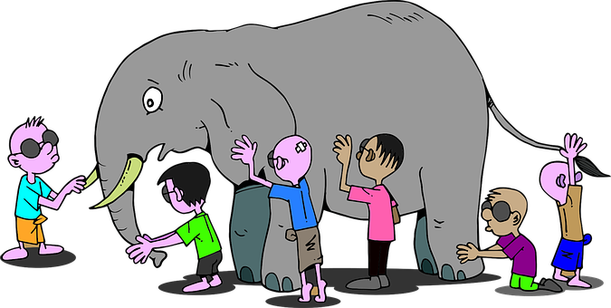

Hi, my name is Diaa. Welcome to my page.
I'm a creative, content writer, and soon a web developer

I came a long way to this point, and I did a lot of things in my life. I started my career in media , then I worked as a film critic and columnist, then a TV producer. In 2013 I migrated from Egypt to Germany. Now I'm learning marketing and web development at the age of 47, and yet I'm a proud of what I'm doing and I'm good at it 👌 .
I started writing at the age of 6. Almost fourty years later, I started learning web Development, but I'm doing both very well. You are presently seeing a sample of my work.
I love cinema. I wrote, produced and directed some docs. I also launched a Festival in Germany for the North African/Middle East Films in 2016. Apart from that, my favourite being (I don't like to call them animals 😇) is The Elephant. I love elephants 💓 . They are very smart, very emotional, and the real Kings Of The Jungle. They also represtent a lot in our folklore as african people. To me, elephants are symbols of wisdom and the relativity of truth!